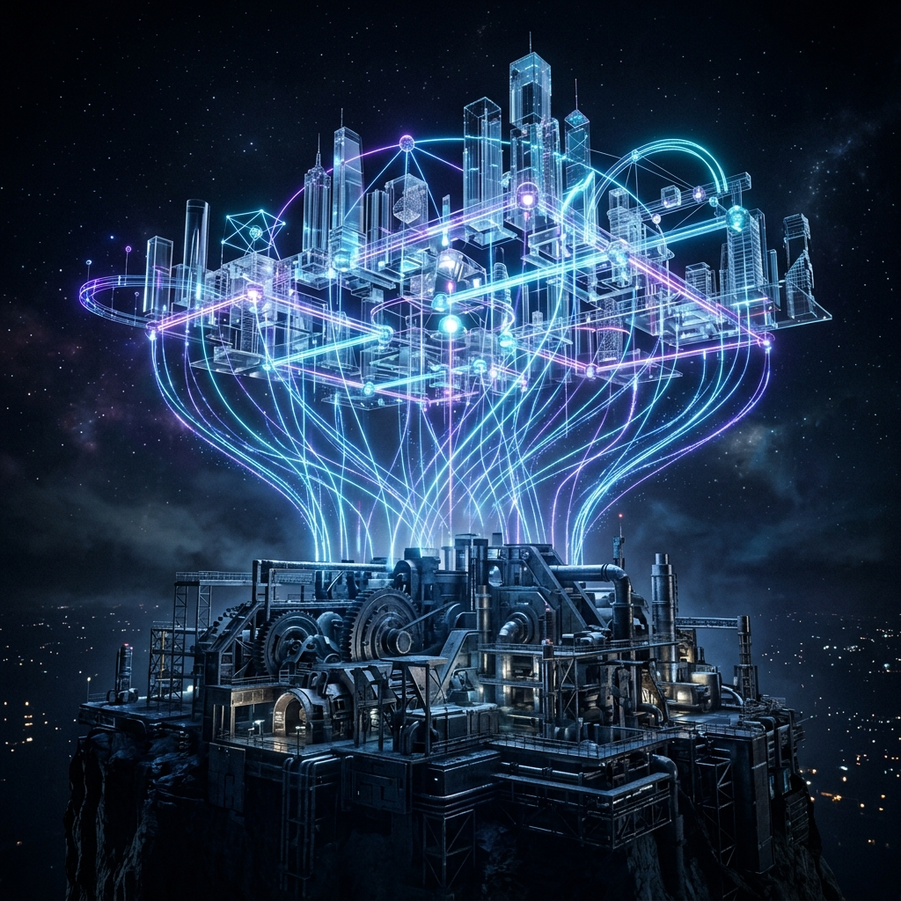
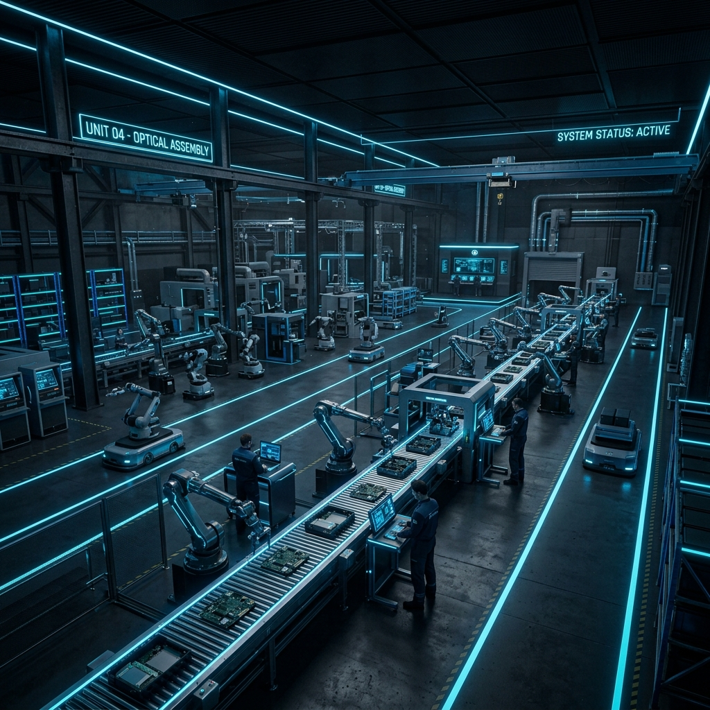
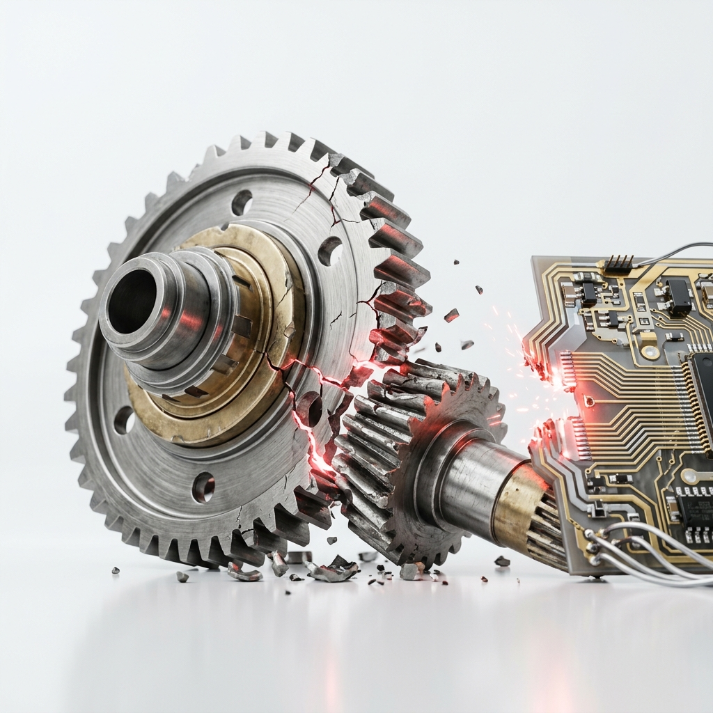
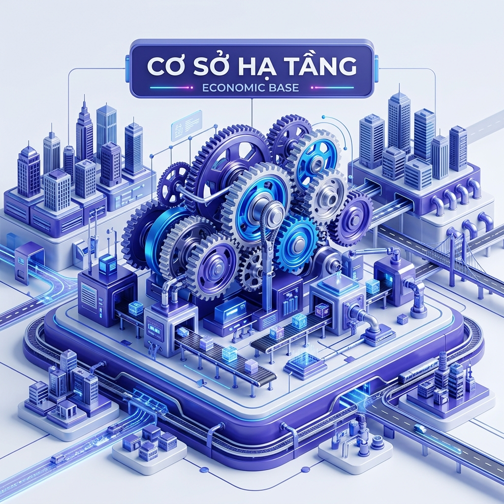
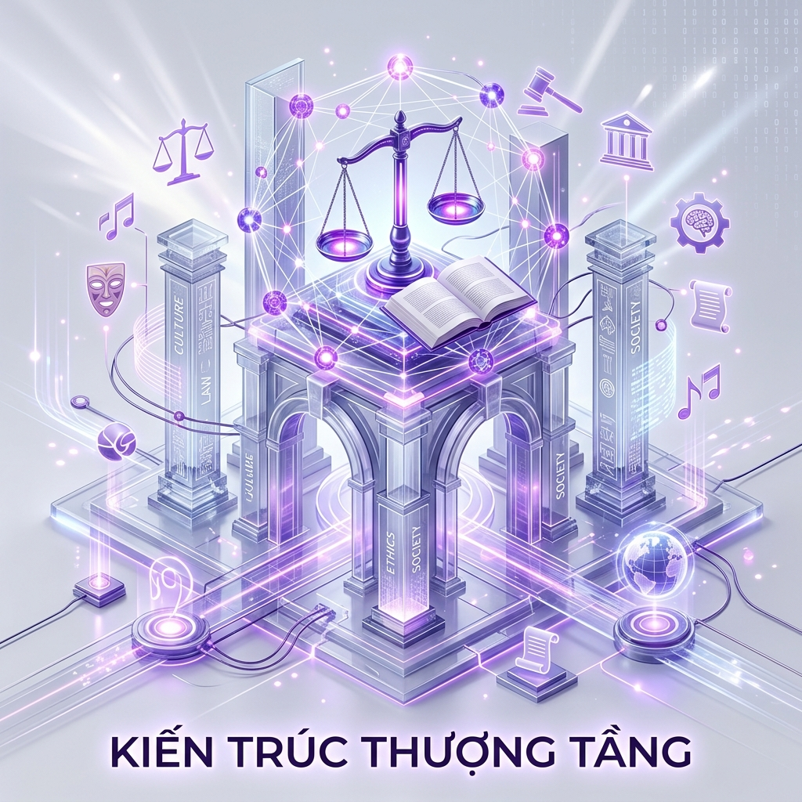
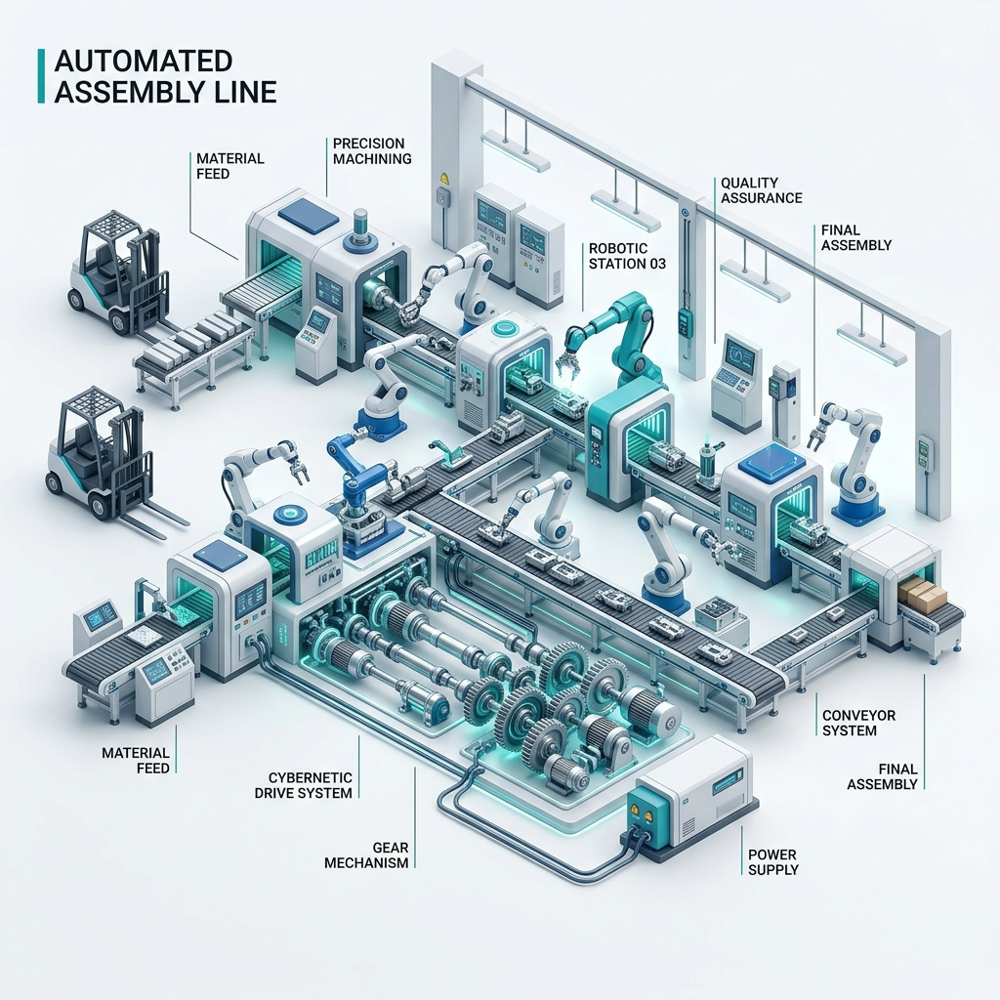
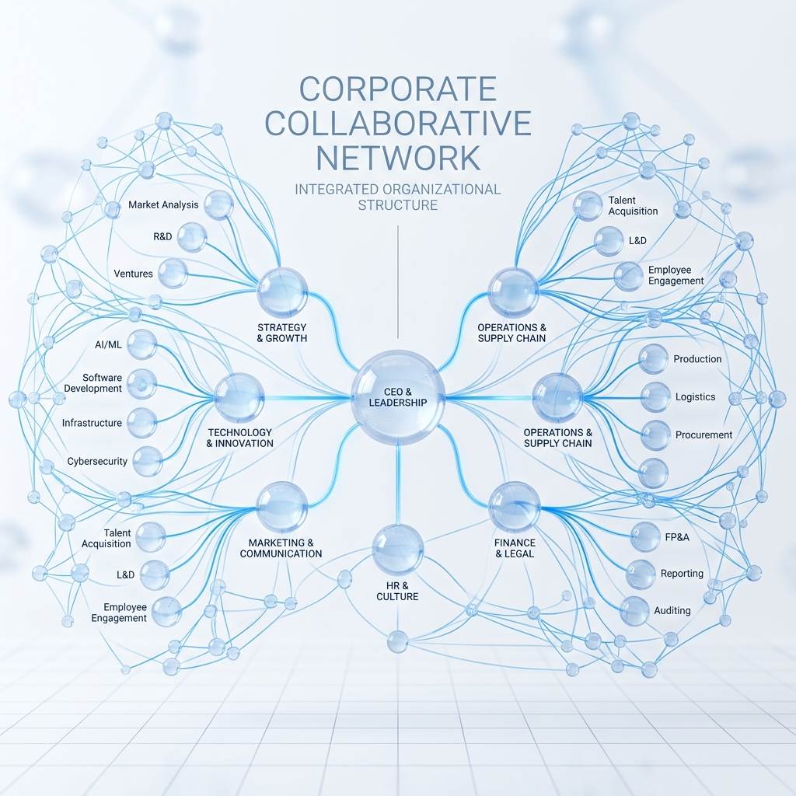

Phân tích chuyên sâu các quy luật vận động của xã hội loài người. Chiêm nghiệm thực tiễn qua sự mâu thuẫn biện chứng khi áp dụng văn hóa doanh nghiệp hiện đại vào mô hình sản xuất truyền thống.

Tìm hiểu cội nguồn sự vận động lịch sử loài người thông qua 4 nội dung lý thuyết cốt lõi của Phần I Chương III giáo trình Triết học Mác - Lênin MLN111.
Sản xuất vật chất là quá trình mà trong đó con người sử dụng công cụ lao động tác động trực tiếp hoặc gián tiếp vào tự nhiên, cải biến các dạng vật chất của giới tự nhiên để tạo ra của cải xã hội, nhằm thoả mãn nhu cầu tồn tại và phát triển của con người.
Sản xuất vật chất là cơ sở của sự tồn tại và phát triển xã hội loài người. Xét đến cùng, không thể dùng tinh thần để giải thích đời sống tinh thần; để phát triển xã hội phải bắt đầu từ phát triển đời sống kinh tế - vật chất.
Duy trì sự tồn tại và phát triển
Sản xuất vật chất tạo ra tư liệu sinh hoạt để duy trì sự sống của con người (Ví dụ: Trồng trọt lúa gạo để ăn, dệt vải để mặc, xây nhà để ở). C.Mác khẳng định: “Đứa trẻ nào cũng biết rằng bất kể dân tộc nào cũng sẽ diệt vong, nếu như nó ngừng lao động, không phải một năm, mà chỉ mấy tuần thôi”.
Hình thành nên các quan hệ xã hội
Sản xuất vật chất tạo ra quan hệ kinh tế - vật chất, làm nền móng nảy sinh ra chính trị, pháp luật, đạo đức, tôn giáo... (Ví dụ: Việc trao đổi mua bán hàng hóa làm xuất hiện khế ước thương mại và luật pháp để quản lý). C.Mác chỉ rõ: “Việc sản xuất ra những tư liệu sinh hoạt vật chất trực tiếp... tạo ra một cơ sở từ đó mà người ta phát triển các thể chế nhà nước, pháp quyền, nghệ thuật...”.
Lao động sáng tạo con người
Thông qua lao động sản xuất, con người tự tách khỏi tự nhiên, hình thành nên ngôn ngữ, nhận thức, tư duy và đạo đức (Ví dụ: Nhờ chế tạo và sử dụng các công cụ lao động như rìu đá, cung tên mà bàn tay và não bộ con người phát triển hoàn thiện). Ph.Ăngghen khẳng định: “lao động đã sáng tạo ra bản thân con người”.
Đây là quy luật cơ bản nhất quyết định sự vận động và phát triển của mọi phương thức sản xuất xã hội trong lịch sử loài người. Trong đó, sự phát triển không ngừng của LLSX đóng vai trò là động lực gốc rễ.

Biểu thị mối quan hệ giữa con người với tự nhiên trong quá trình sản xuất. LLSX là nội dung vật chất kỹ thuật mang tính động nhất.
Biểu thị quan hệ giữa người với người trong quá trình sản xuất vật chất. QHSX đóng vai trò là hình thức xã hội của sản xuất.
Đây là quy luật cơ bản nhất chi phối sự vận động và tiến hóa của toàn bộ xã hội loài người. Mối quan hệ biện chứng giữa LLSX và QHSX diễn ra qua hai nội dung trái ngược nhưng thống nhất:
Mối quan hệ biện chứng phản ánh quy luật phát triển giữa cấu trúc kinh tế - xã hội bên dưới làm nền tảng và các hệ tư tưởng chính trị, nhà nước pháp quyền hình thành bên trên để bảo vệ nền tảng kinh tế đó.


Hệ tư tưởng tinh thần (Chính trị, Pháp luật, Đạo đức, Tôn giáo, Nghệ thuật) và Các thiết chế chính trị - xã hội tương ứng (Nhà nước, Đảng phái, Giáo hội, Đoàn thể).
Toàn bộ các Quan hệ sản xuất (gồm QHSX Thống trị giữ vai trò chủ đạo, QHSX Tàn dư của xã hội cũ, QHSX Mầm mống của xã hội mới) hợp thành cơ cấu kinh tế của xã hội.
CSHT là gốc rễ kinh tế, quyết định toàn bộ cấu trúc KTTT. Giai cấp nào nắm giữ tư liệu sản xuất chủ đạo trong CSHT sẽ nắm giữ quyền lực nhà nước và hệ tư tưởng chính trị thống trị của KTTT đó.
KTTT không thụ động mà bảo vệ CSHT đã sinh ra nó. Trong các bộ phận, Nhà nước là thiết chế chính trị mạnh mẽ nhất, tác động trực tiếp và thô bạo nhất vào CSHT thông qua pháp luật và bạo lực.
Cơ sở kinh tế quyết định Chính sách văn hóa: Cơ sở hạ tầng của doanh nghiệp chính là hệ thống kinh tế nội bộ, điều kiện làm việc thực tế và thu nhập của công nhân. Các chính sách văn hóa tinh thần (KTTT) muốn thành công bắt buộc phải bắt nguồn và bảo vệ lợi ích vật chất của người lao động. Không thể xây dựng "văn hóa công ty" bay bổng khi chế độ lương thưởng và môi trường sản xuất vật chất cơ bản chưa được đảm bảo tốt.
Mô hình lý thuyết toàn diện của C.Mác mô tả xã hội ở từng giai đoạn lịch sử nhất định như một cơ thể sống hoàn chỉnh, vận động tự thân nhờ sự tương thích giữa 3 bộ phận cấu thành.
Sự thay thế các hình thái kinh tế - xã hội trong lịch sử nhân loại diễn ra theo các quy luật khách quan (như quy luật QHSX phù hợp trình độ LLSX). Quá trình này tự thân vận động và chuyển hóa, độc lập với mong muốn duy ý chí hay ảo tưởng chính trị chủ quan của con người.
Muốn nghiên cứu, đánh giá hay cải tạo xã hội (hoặc doanh nghiệp), ta bắt buộc phải đi sâu nghiên cứu phương thức sản xuất vật chất hiện thực của nó, thay vì sa đà vào cải tổ các lý thuyết, khẩu hiệu tinh thần sáo rỗng.
Tái cấu trúc Doanh nghiệp toàn diện: Muốn nâng cấp tầng văn hóa sáng tạo (KTTT), doanh nghiệp bắt buộc phải nâng cấp nền tảng vật chất kỹ thuật (LLSX - như robot tự động hóa dây chuyền sản xuất lò gạch) và tái cấu trúc quy trình phân chia lợi ích (QHSX - như cơ chế thưởng Kaizen công bằng). Mọi nỗ lực ép buộc thay đổi tư duy nhân viên từ trên xuống mà không cải tạo phương thức sản xuất bên dưới đều thất bại.
Hệ thống chẩn đoán biện chứng diễn biến doanh nghiệp. Tự động hóa phân tích mối quan hệ tương tác giữa LLSX, QHSX và KTTT qua các thời kỳ.
Bối cảnh & Lực lượng sản xuất (LLSX): Nhà máy gạch men vận hành lò nung cơ khí truyền thống, ca kíp 3 ca khắt khe, điều kiện lao động nóng bức, nặng nhọc và ô nhiễm. Quy chế quản lý, ca kíp cố định và giám sát trực tiếp (QHSX) đang hoạt động ổn định và duy trì năng suất cao.
Cải tổ duy ý chí (Cấy ghép QHSX & KTTT không phù hợp): Ban Giám đốc sau khi học tập nước ngoài đã quyết định áp đặt mô hình "Văn hóa tự do kiểu Google" (bỏ chấm công vân tay, nới lỏng kỷ luật, tự quản lý thời gian) cho toàn bộ nhà máy, kể cả công nhân lò nung trực tiếp.
Hậu quả biện chứng (Đứt gãy hệ thống): Do đặc thù lò nung cần sự đồng bộ ca kíp nghiêm ngặt, việc tự do hóa giờ giấc làm công nhân sao lãng. Lò nung bị lệch ca, sốc nhiệt độ gây nứt hỏng gạch, tỷ lệ gạch lỗi vọt lên 50%, năng suất sụt giảm nghiêm trọng, dẫn đến đứt gãy hệ thống sản xuất.
Vui lòng chọn một mô hình văn hóa doanh nghiệp ở trên và bấm ÁP DỤNG để bắt đầu phân tích tương thích biện chứng.
Lò nung cháy đều, gạch ra lò đẹp: Lực lượng sản xuất (LLSX) là cái lò nung gạch thủ công rất nóng và thô sơ, bắt buộc phải có người canh liên tục để giữ nhiệt độ. Quan hệ sản xuất (QHSX) tương ứng là quy định chia 3 ca làm việc nghiêm túc, chấm công vân tay chặt chẽ. Cách quản lý này giống như "chiếc áo vừa vặn" với nhà máy gạch thủ công, giúp lò nung luôn đỏ lửa, gạch ra lò đạt chất lượng 100%, không bị hỏng hóc dù công việc rất vất vả.
Áp dụng văn hóa tự do sai chỗ (Cấy ghép lệch pha): Ban Giám đốc đi học tập ở nước ngoài về, muốn đổi mới nên bỏ chấm công vân tay, cho công nhân lò nung tự do đi làm linh hoạt giờ giấc như nhân viên văn phòng Google. Triết học gọi đây là sai lầm duy ý chí (ảo tưởng chủ quan): mang cách quản lý tự do của văn phòng máy lạnh (QHSX mới) áp đặt vào những người công nhân xúc than nung gạch thủ công (LLSX thô sơ). Chiếc áo quá rộng và lạc tông khiến tính đồng bộ ca kíp bị phá vỡ hoàn toàn.
Lò nguội, gạch vỡ, nhà máy sụp đổ: Được tự do giờ giấc, công nhân đi làm lệch ca, không có ai bàn giao lò đúng giờ. Lò nung gạch không được giữ nhiệt đều đặn bị sốc nhiệt đột ngột. Hậu quả là gạch nứt vỡ hỏng tới 50%, lò nung nứt toác, máy móc hư hại nghiêm trọng. Mâu thuẫn gay gắt giữa cách quản lý quá lỏng lẻo (QHSX mới) và cái lò nung thủ công thô sơ (LLSX cũ) bùng nổ, khiến toàn bộ nhà máy bị đứt gãy sản xuất và sụp đổ hoàn toàn.

Trình độ công cụ sản xuất là điểm xuất phát khách quan của toàn bộ hình thái kinh tế - xã hội. Công cụ càng phức tạp càng yêu cầu trình độ kỹ thuật và tổ chức tương thích.

Hình thức xã hội của quá trình sản xuất thực tiễn. Đóng vai trò mở đường thúc đẩy mạnh mẽ hoặc kìm hãm, đứt gãy sự tiến hóa của LLSX vật chất.
Việc áp đặt duy ý chí một thiết chế quản trị KTTT (văn hóa sáng tạo kiểu Google) vượt trước hoặc lệch pha khỏi nền tảng LLSX thực tế dẫn đến xung đột nội tại.
Làm thế nào để áp dụng đúng đắn bài học triết học Mác - Lênin vào cải tạo tổ chức doanh nghiệp trong thực tế?
Áp dụng "văn hóa Google tự do" độc quyền cho các phòng ban có trình độ LLSX mang tính trí tuệ cá thể hóa (Thiết kế mẫu gạch, R&D, Tiếp thị marketing).
Đối với bộ phận sản xuất trực tiếp (lò nung cơ khí), bắt buộc khôi phục quy chế kiểm soát giờ giấc nghiêm ngặt để phù hợp với trình độ dây chuyền hiện tại.
Xây dựng phong trào thi đua "Cải tiến liên tục" từ dưới lên. Đây là mô hình KTTT/YTXH phản ánh đúng thực tiễn kinh tế của lao động công nghiệp truyền thống.
Về lâu dài, muốn nới lỏng kỷ luật và tăng tự do tinh thần cho công nhân, bắt buộc đầu tư Robot tự động hóa lò nung để giải phóng sức lao động vật lý nặng nhọc.
Củng cố toàn bộ kiến thức của Chương III: Chủ nghĩa duy vật lịch sử bằng các thử thách trí tuệ cực kỳ sáng tạo và hấp dẫn dưới đây.
Kéo thả các chip vào đúng các ô tương ứng. Hãy cực kỳ tỉnh táo trước Bẫy học thuật đại diện cho Lực lượng sản xuất!
Bạn đang vận hành nhà máy...
Danh sách các công cụ Trí tuệ Nhân tạo (AI) mà nhóm chúng em đã sử dụng để hỗ trợ nghiên cứu lý luận, lập trình giao diện và tối ưu hóa trải nghiệm học tập.
Hỗ trợ Nghiên cứu & Ý tưởng
Hỗ trợ Hệ thống hóa tài liệu
Trợ lý Lập trình UI/UX